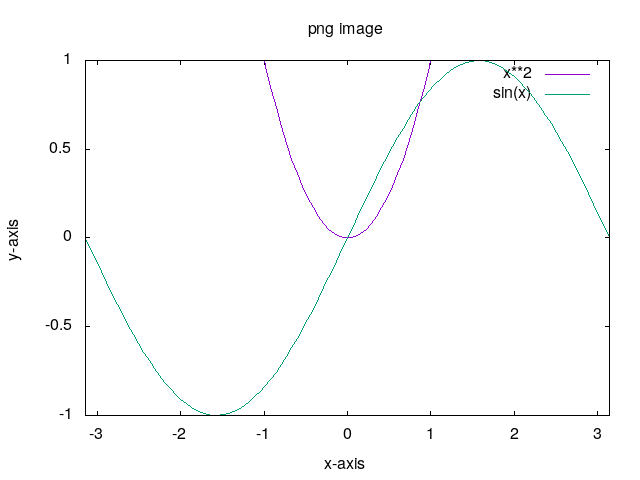
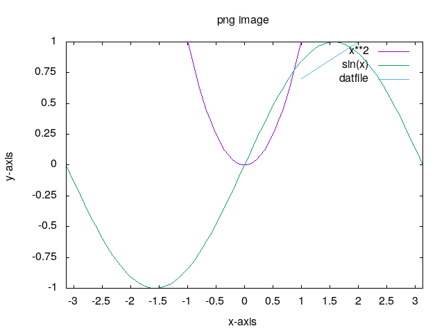
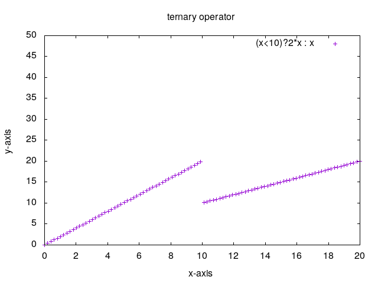
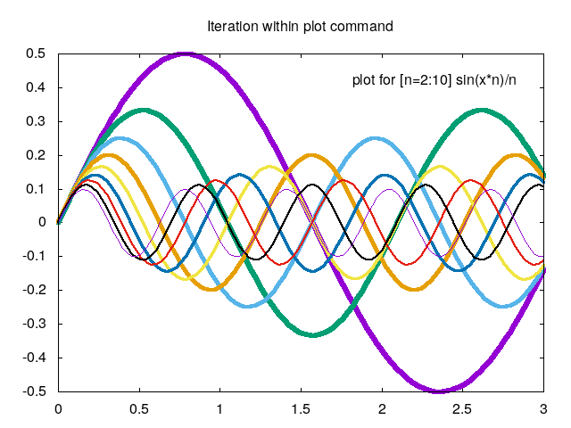
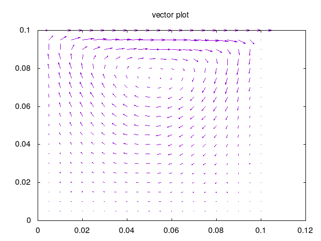
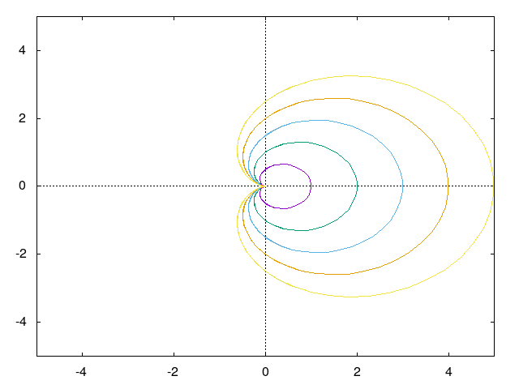
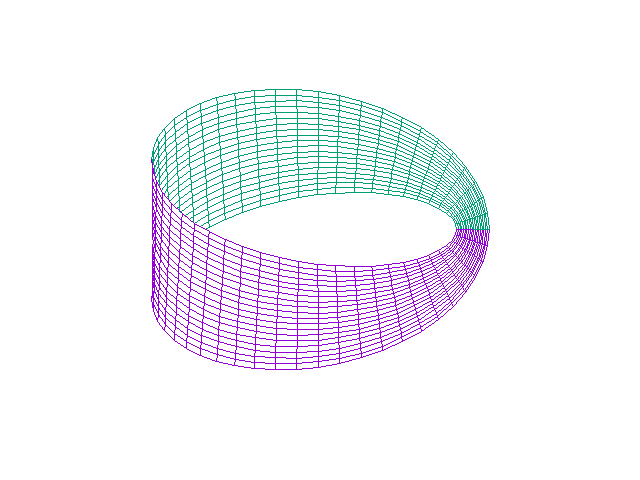

1. Gnuplot¶
Gnuplot is a command-line program that can generate two- and three-dimensional plots of functions, data .
1.1. Installation¶
Windows OS: Available on SourceForge.net
Ubuntu/Linux OS:
sudo apt-get install gnuplot
1.3. Getting Started:¶
For this demonstration Ubuntu platform is used.
There are two ways to work a) Writing every command on interface b) Using scripts. Second option is preferred which save time.
1.4. Some basics:¶
On terminal write gnuplot and hit enter for gnuplot interface. With the following commands try to reproduce the same output.
set title "Single plot sin(x)"
plot sin(x)
|
set title "multi-plot sin(x),cos(x),2*x "
plot sin(x),cos(x),2*x
|
set title "Adjust x and y ranges"
#[:] auto ranges , [p:q] from p to q
#[p:] from p to auto set , [:q] from auto to q
set xrange[-pi:pi]
set yrange[-2:2]
plot sin(x),cos(x),2*x
|
1.5. DAT files¶
1.5.1. Basics¶
With the sample.dat dat file lets move ahead. Default plotting style is points.
Gnuplot also supports shorthand notations. It default reads and plot first and second columns. Lines with hash(#) are
comments for gnuplot.
set title "Dat file"
# assuming file is in
# current working directory
plot 'sample.dat'
|
set title "with lines"
plot 'sample.dat with lines title "sample"
#with short hand notations
#plot 'sample.dat' w l t "sample"
|
set title "with linespoints"
plot 'sample.dat' with linespoints
#with short hand notations
#plot 'sample.dat' w lp
|
1.5.2. Advanced¶
It supports spread-sheet (excel) like calculations. To access column using x:y format is used.
set title "column 1 vs 3"
# assuming file is in
# current working directory
plot 'sample.dat' u 1:3 title "1:3" ,\
'' u 3:1 w l t "3:1"
#try
#plot 'sample.dat' t "sample.dat" u 1:3
#plot 'sample.dat' t "sample.dat" u 2:3
#plot 'sample.dat' t "sample.dat" u 2:1 w l
#plot 'sample.dat' t "sample.dat" u 3:1 w lp
|
set title "some manupulation and variables"
a=5
plot 'sample.dat' u ($2*5):3 w l t "($2*5):3",\
'' u ($2*a):3 w p t "($2*a=5):3"
# try a=4.5,5.5,10
# which does not change original data
# Handy to normalize raw data.
|
#Both data file and analytical equations
#can be plotted at smae time.
set title "more manupulation"
plot 'sample.dat' u 1:2 w p t "(1:2)",\
'' u 1:($1*5) w p t "(1:$1*5)"
# try
# plot 'sample.dat' u 1:3 w p t "(1:3)",\
# '' u 1:(log($1)) w p t "(1:log($1))"
|
1.5.3. Script¶
Script is required to produce publication quality plots. It is nothing but sequence of commands necessary to get plots. Also, it saves time and offers more customization.
Output terminal - Gnuplot offers several output terminal out of them eps, svg, png, jpeg are used frequently.
Output - Name of output file.
Size - Depending upon the output terminal size can be specified in pixels or in other units or can be specified with output terminal.
Title - Tittle can be set as shown in above examples.
xrange,yrange - Ranges can be specified as
[x:y]as shown in above examples.xlabel,ylabel - Is used to show labels on each axes.
These are sufficient properties needs to be specified to get good images.
Save the following commands in file named png.gp. Open new terminal and execute as gnuplot png.gp which produces
required image.
#PNG Output, default size 640,480 or
#'set size 320,240'.
set terminal png size 320,240 enhanced
set output 'png_image.png'
#unset key #to hide graph title/legend which
#sometimes intersects with plots.
#set key position #position = top,bottom,lefttop etc
#OR
#set key outside
set title "png image"
set xlabel "x-axis"
set ylabel "y-axis"
set xrange [-3.14:3.14]
set yrange [-1:1]
plot x**2,sin(x)
|
 |
#PNG Output, default size 640,480 or
#'set size 320,240'.
set terminal png size 320,240 enhanced
set output 'png_image.png'
#unset key #to hide graph title/legend which
#sometimes intersects with plots.
#set key position #position = top,bottom,lefttop etc
#OR
#set key outside
set title "png image"
set xlabel "x-axis"
set ylabel "y-axis"
set xtics 0.5 # for minor tics
set ytics 0.25
set xrange [-3.14:3.14]
set yrange [-1:1]
plot x**2,sin(x),'images/sample.dat' u 1:3 w l t "datfile"
|
 |
For other output terminal only following changes are required.
+ set terminal jpeg size 320,240 enhanced
set output 'jpeg_image.jpeg'
+ set terminal svg size 320,240 enhanced
set output 'svg_image.svg'
+ set terminal postscript eps size 3.5,2.62 enhanced
set output 'eps_image.eps'
#size in 'inches'
1.6. CSV files¶
CSV files are comma separated files. Paraview exports data in csv format which then can be used to plot using gnuplot. For this the ‘data separator’ property need to set. Rest commands remains same. e.g.
set datafile separator ","
set title "eps_image.eps"
..
..
1.7. Ternary operator and LOOP¶
1.7.1. Ternary operator¶
a?b:c is ternary operator where a is condition which if true b is considered else c.
If either b or c turn out to be 1/0 , plotting is skipped as demonstrated below.
#PNG Output, default size 640,480 or 'set size 320,240'.
set terminal png enhanced
set output 'ternary operator.png'
set title "ternary operator"
set xlabel "x-axis"
set ylabel "y-axis"
set xrange [0:20]
set yrange [0:50]
set xtics 2
set ytics 5
plot (x<10)?2*x : x w p
#plot (x<10)?2*x : 1/0 w p
#try this
#plot 'sample.dat' u 1:( $1<8 ? $2: 1/0) w l t "datfile"
|
 |
1.7.2. LOOP¶
Sometimes it is required to repeat same sequence again and again and to save time loop or iterations is used.
#Reference:- http://gnuplot.sourceforge.net/demo/iterate.html
set terminal png enhanced
set output 'png_image.png'
set title "Iteration within plot command"
set xrange [0:3]
set label 1 "plot for [n=2:10] sin(x*n)/n" at graph .95, graph .92 right
plot for [n=2:10] sin(x*n)/n notitle lw (13-n)/2
#For time series plot from c/c++ cfd code or from cfd software. For example plot over line
#for 10 timesteps.
#Assuming file name is 'data_1.dat','data_2.dat'..'data_10.dat'.
#plot for [i=1:10] file=sprintf("data_%d.dat",i) file u 1:2 t file
#plot for [i=1:10] file=sprintf("data_%g.dat",i*0.5) file u 1:2 t file
|
 |
1.8. 3D surfaces¶
3D plots can be used with splot command which means surface plot. This section is reproduce from
Hirophysics and Gnuplot surface
splot sin(x)*cos(y)
|
set hidden3d
splot sin(x)*cos(y)
|
set isosample 40
set hidden3d
splot sin(x)*cos(y)
|
set isosample 40
set hidden3d
set pm3d
splot [0:2*pi] [0:2*pi] sin(x)*cos(y)
|
set isosample 40
set hidden3d
set pm3d at b
splot [0:2*pi] [0:2*pi] sin(x)*cos(y)

|
set isosample 40
set hidden3d
set pm3d at bs
splot [0:2*pi] [0:2*pi] sin(x)*cos(y)
|
set isosample 60
set pm3d map
splot [0:2*pi] [0:2*pi] sin(x)*cos(y)
|
set isosample 60
set contour
set cntrparam levels 10
#set cntrparam #try this
splot [0:2*pi] [0:2*pi] sin(x)*cos(y)
|
Note
Surface plot can be obtained with dat or csv files in same manner.
It requires trial and error approach to get exact image which may consumes time.
Hence, it is advised to use another alternative i.e. paraview .
1.9. Table mode¶
Table mode allows to save data points (X Y) for 2d or (X Y Z) for 3d to disk i.e. to file. Output of plot commands between set and unset table
are directed to file on disk in form of data points.
#2D
set xrange [-pi:pi]
set table 'table_2d.dat'
plot sin(x)
unset table
plot 'table_2d.dat' w l
|
#3D
set xrange [-pi:pi]
set yrange [-pi:pi]
set table 'table_3d.dat'
splot sin(x)*cos(y)
unset table
set dgrid3d
set hidden3d
set pm3d
splot 'table_3d.dat' w l
|
1.10. Vector plot¶
Vector plot is one of the best feature offered by gnuplot. For this demonstration data exported from paraview for Lid Driven Cavity
case simulated with OpenFOAM is used. vector.csv
set terminal png enhanced
set output 'vector.png'
set title 'vector plot'
#As working with csv file.
set datafile separator ","
#parameter to adjust vector lengths
scale=0.01
plot 'vector.csv' u 5:6:(scale*$2):(scale*$3) w vectors
|
 |
1.11. Paramatric Equations¶
One can study parametric equations with this mode.
set terminal png enhanced
set output '2d parametric.png'
set title '2d parametric plot'
set parametric
set xrange [-5:5]
set yrange [-5:5]
set zeroaxis
plot for [n=1:5] [-2*pi:2*pi] 0.5*n*(1+cos(t))*cos(t),0.5*n*(1+cos(t))*sin(t)
|
 |
Mobius Surface
set terminal png enhanced
set output '3d parametric.png'
set title '3d parametric plot'
set parametric
set hidden3d
set noztics
set isosample 50,20
set view 35,0
splot [0:2*pi][-0.1:0.1] cos(u)+v*cos(u/2)*cos(u),\
sin(u)+v*cos(u/2)*sin(u),v*sin(u/2)
|
 |